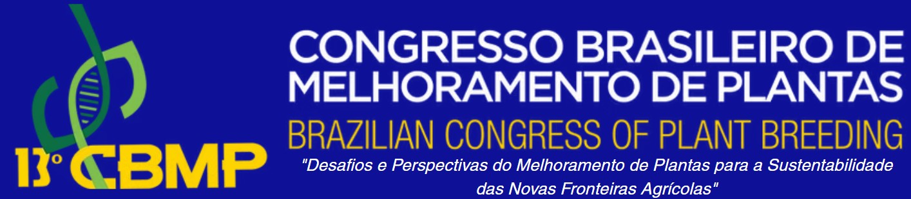

renv::restore()Useful Information!

This material contains the scripts and data needed to reproduce the examples seen in the pliman and plimanshiny package for High-throughput phenotyping course held on 13º Brazilian Plant Breeding Congress
1 Software
To reproduce the examples in this material, you will need the latest versions o R and RStudio (Portuguese).
2 Restoring the R environment with renv
This command will install all required packages with the exact versions recorded in the renv.lock file.
If you later add new packages, run:
renv::snapshot()3 Citation
To cite the pliman package in your works, use the following reference:
Olivoto T (2022). “Lights, camera, pliman! An R package for plant image analysis.” Methods in Ecology and Evolution, 13(4), 789-798. doi:10.1111/2041-210X.13803 https://doi.org/10.1111/2041-210X.13803.
citation("pliman")Please, support this project by citing it in your publications!
Olivoto T (2022). "Lights, camera, pliman! An R package for plant
image analysis." _Methods in Ecology and Evolution_, *13*(4),
789-798. doi:10.1111/2041-210X.13803
<https://doi.org/10.1111/2041-210X.13803>.
Uma entrada BibTeX para usuários(as) de LaTeX é
@Article{,
title = {Lights, camera, pliman! An R package for plant image analysis},
author = {Tiago Olivoto},
year = {2022},
journal = {Methods in Ecology and Evolution},
volume = {13},
number = {4},
pages = {789-798},
doi = {10.1111/2041-210X.13803},
}4 Scripts
The .zip file contains a folder with the static website, structured as follows:
D:/htp_cbmp2025
├── 00_about.qmd
├── 00_about.rmarkdown
├── 20231001_144226.jpg
├── 20231001_153711.jpg
├── 20231001_160425.jpg
├── 20231003_144448.jpg
├── 20231005_112708.jpg
├── 20231005_140911.jpg
├── bacteria.jpg
├── beans
│ ├── G1042.jpg
│ ├── G1080.jpg
│ ├── G1083.jpg
│ ├── G1106.jpg
│ ├── G1113.jpg
│ ├── G1149.jpg
│ ├── G1173.jpg
│ ├── G1205.jpg
│ ├── G1261.jpg
│ ├── G1264.jpg
│ ├── G1265.jpg
│ ├── G1320.jpg
│ ├── G1328.jpg
│ ├── G1354.jpg
│ ├── G1356.jpg
│ ├── G1358.jpg
│ ├── G148.jpg
│ ├── G166.jpg
│ ├── G169.jpg
│ ├── G229.jpg
│ ├── G275.jpg
│ ├── G278.jpg
│ ├── G433.jpg
│ ├── G478.jpg
│ ├── G478A.jpg
│ ├── G57.jpg
│ ├── G623.jpg
│ ├── G685.jpg
│ ├── G686.jpg
│ ├── G731.jpg
│ ├── G734.jpg
│ ├── G735.jpg
│ ├── G738.jpg
│ ├── G747.jpg
│ ├── G753.jpg
│ ├── G76.jpg
│ ├── G799.jpg
│ ├── G801.jpg
│ ├── G803.jpg
│ ├── G811.jpg
│ ├── G818.jpg
│ ├── G840.jpg
│ ├── G842.jpg
│ ├── G843.jpg
│ ├── G847.jpg
│ ├── G855.jpg
│ ├── G857.jpg
│ ├── G87.jpg
│ ├── G908.jpg
│ ├── G917.jpg
│ ├── G92.jpg
│ ├── G955.jpg
│ ├── G983.jpg
│ ├── G994.jpg
│ └── G995.jpg
├── capa.jpg
├── capsulas
│ ├── P1_Cápsulas_1_2024-11-26-11-10-10.jpg
│ ├── P2_Cápsulas_1_2024-11-26-11-17-31.jpg
│ ├── P3_Cápsulas_1_2024-11-26-11-34-31.jpg
│ ├── P4_Cápsulas_1_2024-11-26-11-43-42.jpg
│ ├── P5_Cápsulas_1_2024-11-26-11-54-12.jpg
│ ├── P6_Cápsulas_1_2024-11-26-12-06-34.jpg
│ └── proc
├── capsulas.jpg
├── dia_01.qmd
├── dia_02.qmd
├── dose_response
│ ├── img_P1_0,01.JPG
│ ├── img_P1_0,1.JPG
│ ├── img_P1_0.JPG
│ ├── img_P1_1.JPG
│ ├── img_P1_10.JPG
│ ├── img_P1_100.JPG
│ ├── img_P1_50.JPG
│ ├── img_P2_0,01.JPG
│ ├── img_P2_0,1.JPG
│ ├── img_P2_0.JPG
│ ├── img_P2_1.JPG
│ ├── img_P2_10.JPG
│ ├── img_P2_100.JPG
│ └── img_P2_50.JPG
├── dsm
│ ├── dsm.tif
│ ├── dsm_small.tif
│ ├── dtm.tif
│ ├── mask.tif
│ ├── ortho.tif
│ └── shape.rds
├── feijoes.jpg
├── flax.jpg
├── flax2.jpg
├── flax_ref.JPG
├── fungi.jpg
├── growth_models
│ ├── DAP_16_05-23-2021.tif
│ ├── DAP_19_05-26-2021.tif
│ ├── DAP_25_06-01-2021.tif
│ ├── DAP_31_06-07-2021.tif
│ ├── DAP_34_06-10-2021.tif
│ ├── DAP_41_06-17-2021.tif
│ ├── DAP_46_06-22-2021.tif
│ ├── DAP_49_06-25-2021.tif
│ ├── DAP_4_05-11-2021.tif
│ ├── DAP_52_06-28-2021.tif
│ ├── DAP_55_07-01-2021.tif
│ ├── DAP_67_07-13-2021.tif
│ ├── DAP_73_07-19-2021.tif
│ ├── DAP_74_07-20-2021.tif
│ ├── DAP_80_07-26-2021.tif
│ └── shp_dsm.rds
├── htp_cbmp2025.Rproj
├── img_exported.jpg
├── leaves.jpg
├── lettuce
│ ├── field.png
│ ├── lettuce.rds
│ └── lettuce.tif
├── maize.jpg
├── maturity
│ ├── cropped_09-10-2024.tif
│ ├── cropped_09-13-2024.tif
│ ├── cropped_09-17-2024.tif
│ ├── cropped_09-21-2024.tif
│ ├── cropped_09-24-2024.tif
│ ├── cropped_09-27-2024.tif
│ ├── cropped_10-02-2024.tif
│ ├── cropped_10-04-2024.tif
│ ├── cropped_10-08-2024.tif
│ ├── cropped_10-11-2024.tif
│ ├── result_timeseries_vi_vndvi.xlsx
│ ├── shape_mat.rds
│ └── time_series_maturity_vndvi5.xlsx
├── ortho.tif
├── paper.png
├── pollen.jpg
├── potato
│ ├── clip
│ ├── potato.tif
│ └── potato_shp.rds
├── potato.jpg
├── proc_videira.jpg
├── renv
│ ├── activate.R
│ ├── library
│ └── staging
├── renv.lock
├── Rplots.pdf
├── sevsoja
│ ├── soy_1.jpg
│ ├── soy_10.jpg
│ ├── soy_11.jpg
│ ├── soy_12.jpg
│ ├── soy_13.jpg
│ ├── soy_14.jpg
│ ├── soy_15.jpg
│ ├── soy_16.jpg
│ ├── soy_17.jpg
│ ├── soy_18.jpg
│ ├── soy_19.jpg
│ ├── soy_2.jpg
│ ├── soy_20.jpg
│ ├── soy_21.jpg
│ ├── soy_22.jpg
│ ├── soy_23.jpg
│ ├── soy_24.jpg
│ ├── soy_25.jpg
│ ├── soy_26.jpg
│ ├── soy_27.jpg
│ ├── soy_28.jpg
│ ├── soy_29.jpg
│ ├── soy_3.jpg
│ ├── soy_30.jpg
│ ├── soy_31.jpg
│ ├── soy_32.jpg
│ ├── soy_33.jpg
│ ├── soy_34.jpg
│ ├── soy_35.jpg
│ ├── soy_36.jpg
│ ├── soy_37.jpg
│ ├── soy_38.jpg
│ ├── soy_39.jpg
│ ├── soy_4.jpg
│ ├── soy_40.jpg
│ ├── soy_41.jpg
│ ├── soy_42.jpg
│ ├── soy_43.jpg
│ ├── soy_44.jpg
│ ├── soy_45.jpg
│ ├── soy_46.jpg
│ ├── soy_47.jpg
│ ├── soy_48.jpg
│ ├── soy_49.jpg
│ ├── soy_5.jpg
│ ├── soy_50.jpg
│ ├── soy_6.jpg
│ ├── soy_7.jpg
│ ├── soy_8.jpg
│ └── soy_9.jpg
├── sev_leaves.JPG
├── smaller
│ ├── 20231001_144226.jpg
│ ├── 20231001_153711.jpg
│ ├── 20231001_160425.jpg
│ ├── 20231003_144448.jpg
│ ├── 20231005_112708.jpg
│ └── 20231005_140911.jpg
├── videira.png
├── videira_background.jpg
├── videira_disease.jpg
├── videira_healthy.jpg
├── wheat
│ ├── wheat_ndsu.tif
│ ├── wheat_ndsu_shp.rds
│ └── wheat_ufv.tif
├── _quarto.yml
└── _siteThe material in HTML (_site/index.html) will give you access to the site, where you can view all examples, with codes and outputs. To reproduce the material, simply use the *.qmd files.
For reproduction, it is suggested to set the htp_cbmp2025 folder as the default directory. You can easily set the directory by running the following command, assuming you have the 00_about.qmd script open.
pliman::set_wd_here()5 Acknowledgments
The availability of these mosaics is essential for the continued improvement of tools like {pliman}. I would like to extend my gratitude to @FilipeMathias and Alcinei Azevedo for providing various materials related to high-throughput phenotyping, and to @MaiconNardino and @CaiqueSilva from UFV for providing the multispectral orthomosaics of the wheat field.
Additionally, special thanks to Arthur Bernardeli for providing the digital surface models, digital terrain models, and masks related to the soybean fields, and Gustavo Nandi for providing the orthomosaic from a potato breeding field.
6 Similar tools
This course will primarily focus on the {pliman} and {plimanShiny} R packages. However, these are not the only tools available for high-throughput phenotyping (HTP) in R. I highly recommend exploring the pioneering R package FIELDimageR, as well as its complementary extensions FIELDimageR-Extra and FIELDimageR-QGIS, which offer additional functionalities for enhanced HTP analysis.
7 License

This content is licensed under a CC BY-NC-SA 4.0. The human-readable summary of the license states that you have the right to:
- Share — copy and redistribute the material in any medium or format.
- Adapt — remix, transform, and build upon the material.
Attribution — You must give appropriate credit, provide a link to the license, and indicate if changes were made. You may do so in any reasonable manner, but not in any way that suggests the licensor endorses you or your use.
Under the following terms
Non-Commercial — You may not use the material for commercial purposes.
ShareAlike — If you remix, transform, or build upon the material, you must distribute your contributions under the same license as the original.
No additional restrictions — You may not apply legal terms or technological measures that legally restrict others from doing anything the license permits.